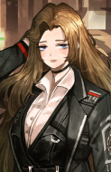

Selecione um pecador
- 

Yi Sang
Anteriormente, o mais jovem chefe de pesquisa de uma divisão confidencial, ele saiu por razões desconhecidas.
Anteriormente, o mais jovem chefe de pesquisa de uma divisão confidencial, ele saiu por razões desconhecidas.